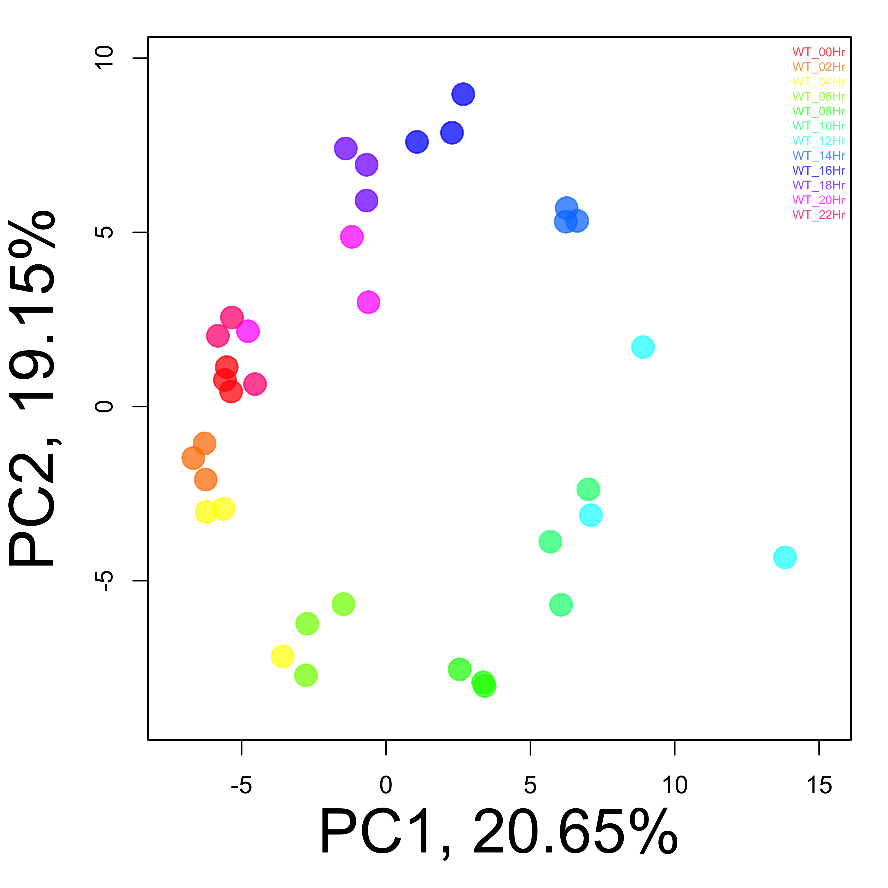

Cluster genes across multiple sample groups
Zhe Zhang
2018-07-03
Introduction: This analysis performs a gene-gene clustering procedure that will identify clusters of co-expressed genes across multiple sample groups. It first runs an ANOVA to find genes significantly different across sample groups and uses these genes as seeds to initiate a set of gene clusters. These clusters will be further refined based on several user-specific paramters. Gene set enrichment analysis is then used to associate each gene cluster to pre-defined gene sets, and then biological meanings.
- Selection of seed genes: ANOVA is used to get each gene a p value for its difference across sample groups and corresponding false discovery rates are calculated using the p values. Afterwards, genes are filtered sequentially by their FDR, p value, and range until the number of seed genes is between the given upper and lower limits.
- Gene clustering analysis: Seed genes from the last step are used by the hclust{stat} function to generate a hierchical clustering tree; the tree is cut at a given height to obtain initial clusters; the cutting height will be lowered if the number of clusters is smaller than the number of sample groups; the initial clusters are filtered to remove outlier genes and clusters smaller than a given number; initial clusters close to each other within a given distance are merged; and finally, the clusters are refined through multiple rounds of re-clustering, which allows the inclusion of genes with less significant ANOVA p values.
- Gene set enrichment analysis: Hypergeometric test is used to find predefined gene sets over-represented in each gene cluster. A collection of gene sets obtained from different sources are available for a few model species, which can be downloaded here.
1 Description
1.1 Project
Perturbed rhythmic activation of signaling pathways in mice deficient for Sterol Carrier Protein 2-dependent diurnal lipid transport and metabolism. (GSE67426)
1.2 PubMed
Jouffe C, Gobet C, Martin E, Métairon S et al. Perturbed rhythmic activation of signaling pathways in mice deficient for Sterol Carrier Protein 2-dependent diurnal lipid transport and metabolism. Sci Rep 2016 Apr 21;6:24631. PMID: 27097688.
1.3 Experimental design
Comparison of liver mRNA expression from Scp2 KO and wild-type mice harvested every 2 hours during 3 consecutive days.
1.4 Analysis
Circadian rhythm in mouse liver, wild type mice only, 3 replicates every 2 hours (12 groups). Each gene was adjusted to its 0 hour mean and rescaled to make its standard deviation equal to 0. As a demonstration, only a subset of genes in the original data with high between sample variance were used.
1.5 Data and samples
- There are 2577 total genes.
- There are 36 total samples.
- There are WT_00Hr, WT_02Hr, WT_04Hr, WT_06Hr, WT_08Hr, WT_10Hr, WT_12Hr, WT_14Hr, WT_16Hr, WT_18Hr, WT_20Hr, WT_22Hr sample groups.
The input data matrix was normalized using sample group WT_00Hr as control, so, the data of each gene was substracted by control group mean and had SD equal to 1.0

Figure 1. Principal components analysis (PCA) using all genes. Samples were colored according to their groups.
2 Analysis and results
2.1 Gene-level summary statistics and ANOVA
Summary statistics and ANOVA p value across all sample groups were calculated for each gene.
Figure 2. Distribution of ANOVA p values. 821 genes have p values less than 0.01.
2.2 Creation of gene clusters
2.2.1 Selection of seed genes
Significant genes were selected from ANOVA results as seeds to generate gene clusters, using the following criteria:
- Select genes with FDR less than 0.1.
- Stop if less than 100 genes were left; otherwise, select those with ANOVA p values less than 0.01.
- Stop if less than 100 genes were left; otherwise, select those with range (max-min) greater than 1.
- If there are still more than 1000 genes left, select the top 1000 with the biggest ranges.
Finnally, a total of 232 genes were selected as seeds for gene clustering in the next step.

Figure 3. Hierarchical clustering of samples using all genes (unsupervised) or selected DEGs (supervised).
2.2.2 Initiation of gene clusters
Gene clusters were created using the seed genes with the following steps:
- Create a hierchical tree based on gene-gene correlation.
- Cut the tree at height 1.2, and put genes of the same branch into the same cluster.
- Calculate correlation of each gene to the centroid (median) of its cluster. Remove the genes if the correlation is less than 0.6.
- Remove clusters with size less than 20% of the expected size (the expected size is M/N if there are M genes and N clusters).
- If there are less than 12 (the number of sample groups) clusters left, reduce the height cutoff by 0.05 and repeat the last 3 steps until there are enough clusters.
- Merge the 2 most similar clusters if the correlation of their centroids is greater than or equal to 0.6. Repeat this step until no 2 clusters are that similar.
These steps clustered 221 of 232 seed genes into 8 initial clusters.
Figure 4. Color of each block corresponds to the average expression (normalized) of each initial gene cluster in each sample (red = higher).
2.2.3 Refinement of gene clusters
The gene clusters were further refined with the following steps:
- Select all 821 genes with p values less than 0.01, and assign each of them to existing clusters:
- Calculate the centroid (median expression level of all genes in the cluster) of each cluster
- Calculate correlation coefficient of each gene to the centroid of each cluster to get a 821 X 8 matrix
- Assign each selected gene to a cluster if its correlation coefficient to the cluster centroid is greater than 0.6, and the correlation coefficient to the centroid of any other cluster is no more than 0.5.
- Repeat the last step for 20 times unless it will not change the clusters any more.
- Finally, remove clusters with number of genes less than 5.525.
The reclustering didn’t converge after 20 cycles
These steps clustered 168 of 821 selected genes into 21 refined clusters.
 Figure 5. Color of each block corresponds to the average expression (normalized) of each refined gene cluster in each sample (red = higher).
Figure 5. Color of each block corresponds to the average expression (normalized) of each refined gene cluster in each sample (red = higher).
More info:
2.3 Analysis of clusters
Clusters created by the last section were further analyzed.
2.3.1 Summary statistics and visualization of individual clusters
Table 1. Summary of individual clusters, with the normalized averages of all genes in each cluster and sample group. Click the name of a cluster to view more details about it:
- the average and standard error of samples in each group;
- hierarchical sample clustering using all genes in the cluster;
- and heatmap of all genes and samples in the cluster.
| Cluster | Num_Gene | Mean_WT_00Hr | Mean_WT_02Hr | Mean_WT_04Hr | Mean_WT_06Hr | Mean_WT_08Hr | Mean_WT_10Hr | Mean_WT_12Hr | Mean_WT_14Hr | Mean_WT_16Hr | Mean_WT_18Hr | Mean_WT_20Hr | Mean_WT_22Hr |
|---|---|---|---|---|---|---|---|---|---|---|---|---|---|
| Cluster_1 | 74 | 0 | 0.320 | 0.4003 | 0.4754 | -0.0674 | -0.8074 | -1.3232 | -1.7725 | -1.4775 | -0.8675 | -0.4452 | 0.038 |
| Cluster_2 | 92 | 0 | 0.220 | 0.6953 | 1.1131 | 1.3442 | 0.7731 | 0.5681 | -0.5761 | -1.1411 | -0.8391 | -0.4592 | -0.140 |
| Cluster_3 | 76 | 0 | 0.027 | 0.4720 | 0.9529 | 1.6852 | 1.7297 | 1.8217 | 1.0513 | 0.1103 | -0.0200 | -0.1501 | -0.150 |
| Cluster_4 | 68 | 0 | -0.110 | -0.2174 | 0.0500 | 0.8026 | 1.5266 | 1.9326 | 1.9415 | 1.4404 | 1.0700 | 0.7313 | 0.170 |
| Cluster_5 | 22 | 0 | -0.910 | -1.3292 | -1.3408 | -1.3086 | -0.8028 | -0.5605 | 1.1441 | -0.4487 | -0.9260 | -1.4410 | -0.760 |
| Cluster_6 | 41 | 0 | 0.120 | -0.3093 | -1.0027 | -1.6774 | -1.6972 | -1.4500 | -0.3144 | 0.4795 | 0.2814 | -0.7223 | -0.760 |
| Cluster_7 | 81 | 0 | -0.360 | -0.7090 | -0.8816 | -1.0076 | -0.4168 | -0.1783 | 0.7138 | 1.1981 | 1.1456 | 0.8200 | 0.290 |
| Cluster_8 | 100 | 0 | -0.110 | -0.3746 | -0.7491 | -1.5633 | -1.8686 | -1.9389 | -1.6773 | -0.7202 | -0.1745 | 0.1049 | 0.150 |
2.3.2 Gene set analysis
Test over-representation of predefined gene sets in each cluster, while using all input genes as background.
Table 2. Numbers of predefined gene sets significantly enriched in each gene cluster. Gene sets were split based on their sources, such as the NCBI BioSystems and KEGG databases. Click on each number to see full list of the gene sets.
| BioSystems | KEGG | MSigDb | PubTator | |
|---|---|---|---|---|
| Cluster_1 | 65 | 3 | 129 | 0 |
| Cluster_2 | 48 | 0 | 152 | 0 |
| Cluster_3 | 92 | 9 | 177 | 0 |
| Cluster_4 | 155 | 11 | 249 | 0 |
| Cluster_5 | 39 | 2 | 137 | 1 |
| Cluster_6 | 54 | 6 | 186 | 0 |
| Cluster_7 | 77 | 2 | 134 | 0 |
| Cluster_8 | 105 | 10 | 119 | 0 |
2.4 More plots
Figure 6. Plot the patterns of all clusters using the mean and standard error of samples of each group.

Figure 7. Color represents the average expression (normalized across samples) of all genes in the same cluster and all samples in the same group (red = higher).

Figure 8. Color represents the average expression (normalized across samples) of individual genes in all samples of the same group (red = higher).

Figure 9. Color represents the expression level (normalized across samples) of each gene and each sample (red = higher).
Figure 10. Color represents the size of each cluster (number of genes) after a reclustering cycle.
3 Appendix
Check out the RoCA home page for more information.
3.1 Reproduce this report
To reproduce this report:
Find the data analysis template you want to use and an example of its pairing YAML file here and download the YAML example to your working directory
To generate a new report using your own input data and parameter, edit the following items in the YAML file:
- output : where you want to put the output files
- home : the URL if you have a home page for your project
- analyst : your name
- description : background information about your project, analysis, etc.
- input : where are your input data, read instruction for preparing them
- parameter : parameters for this analysis; read instruction about how to prepare input data
- Run the code below within R Console or RStudio, preferablly with a new R session:
if (!require(devtools)) { install.packages('devtools'); require(devtools); }
if (!require(RCurl)) { install.packages('RCurl'); require(RCurl); }
if (!require(RoCA)) { install_github('zhezhangsh/RoCAR'); require(RoCA); }
CreateReport(filename.yaml); # filename.yaml is the YAML file you just downloaded and edited for your analysisIf there is no complaint, go to the output folder and open the index.html file to view report.
3.2 Session information
## R version 3.3.3 (2017-03-06)
## Platform: x86_64-apple-darwin13.4.0 (64-bit)
## Running under: OS X Yosemite 10.10.5
##
## locale:
## [1] en_US.UTF-8/en_US.UTF-8/en_US.UTF-8/C/en_US.UTF-8/en_US.UTF-8
##
## attached base packages:
## [1] stats graphics grDevices utils datasets methods base
##
## other attached packages:
## [1] rchive_0.0.0.9000 gplots_3.0.1 htmlwidgets_0.9
## [4] DT_0.2 kableExtra_0.9.0 RoCA_0.0.0.9000
## [7] awsomics_0.0.0.9000 RCurl_1.95-4.9 bitops_1.0-6
## [10] devtools_1.13.4 yaml_2.1.16 rmarkdown_1.10.3
## [13] knitr_1.18
##
## loaded via a namespace (and not attached):
## [1] Rcpp_0.12.14 highr_0.6 pillar_1.1.0
## [4] plyr_1.8.4 tools_3.3.3 digest_0.6.13
## [7] jsonlite_1.5 evaluate_0.10.1 memoise_1.1.0
## [10] tibble_1.4.2 viridisLite_0.2.0 pkgconfig_2.0.1
## [13] rlang_0.1.6 rstudioapi_0.7 withr_2.1.1
## [16] stringr_1.2.0 httr_1.3.1 xml2_1.1.1
## [19] caTools_1.17.1 gtools_3.5.0 hms_0.4.0
## [22] rprojroot_1.3-2 R6_2.2.2 gdata_2.18.0
## [25] readr_1.1.1 magrittr_1.5 backports_1.1.2
## [28] scales_0.5.0 htmltools_0.3.6 rvest_0.3.2
## [31] colorspace_1.3-2 KernSmooth_2.23-15 stringi_1.1.6
## [34] munsell_0.4.3END OF DOCUMENT